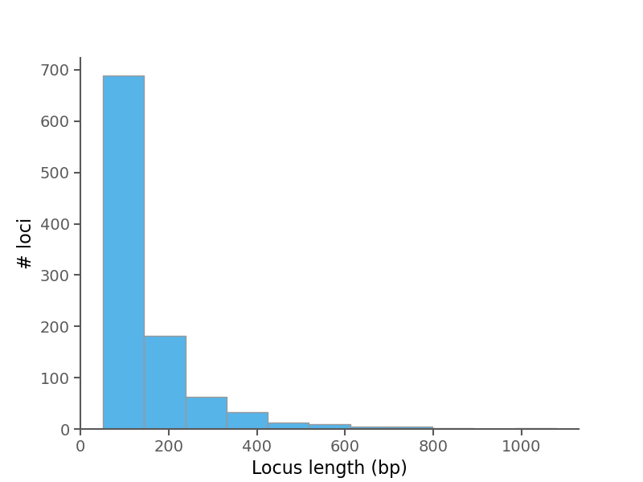
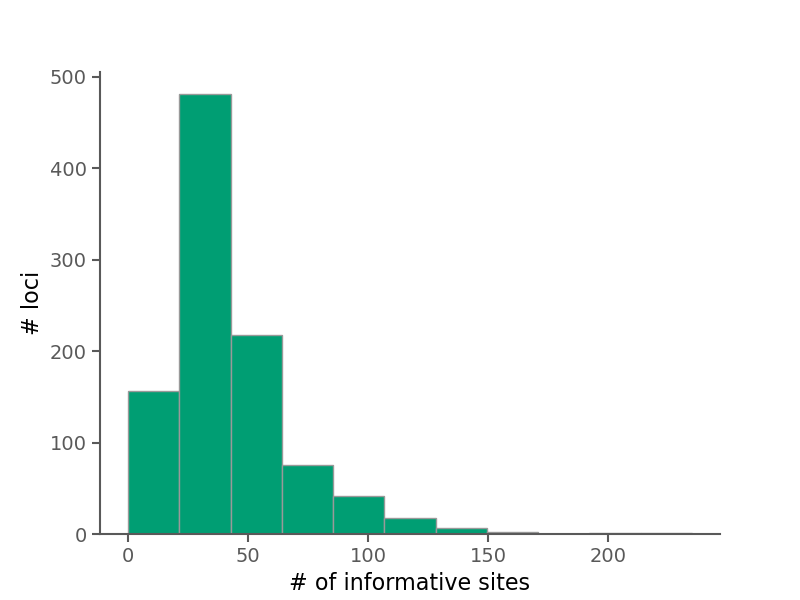
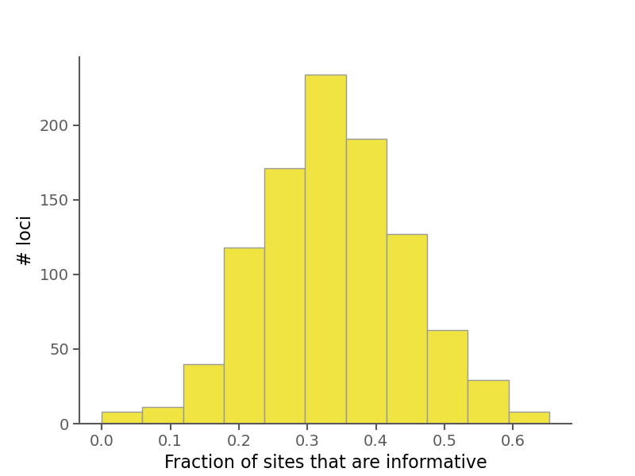

1. Run info ()
The PhyloAcc interface was run on 01.03.2022 | 12:28:49 as follows:
phyloacc_interface.py -d /n/holylfs05/LABS/informatics/Users/gthomas/PhyloAcc-interface-data/data/simu_500_200_diffr_2-1 -m PhyloAcc/Data/ratite/neut_ver3_final.named.mod -o test-plot -t strCam;rhePen;rheAme;casCas;droNov;aptRow;aptHaa;aptOwe;anoDid -g allMis;allSin;croPor;gavGan;chrPic;cheMyd;anoCar -part holy-info,holy-cow,holy-smokes -n 24 -p 4 -j 12
- 1000 alignments were processed
- 43 species present
See the full log file for more info.
Below are some summary plots. Raw data is also available in CSV format in the alignment stats file.
2. Distribution of locus lengths

- Avg. locus length =
- Median locus length =
3. Distribution of informative sites per locus

4. Proportion of informative sites per locus
